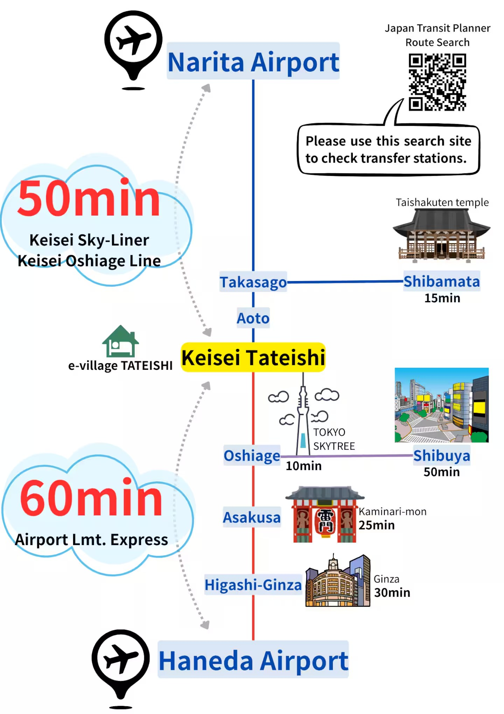

Why Stay Here?
主要スポットへ、乗り換えほぼなしで。
One quiet local station — direct lines to both airports, Skytree and Asakusa. You come home to a calm neighborhood, and the whole city stays within easy reach.

Find Us
京成立石駅から徒歩5分
5-minute walk from Keisei Tateishi Station — a friendly local neighborhood with supermarkets, convenience stores, bakeries and izakaya along the way.
e-village TATEISHIKatsushika City, Tokyo, Japan
東京都葛飾区（京成立石駅 徒歩5分）
Tip: open the map and tap “Directions” for a walking route from the station.
Your Sightseeing Base
ここを拠点に、東京をめぐる。
Five Rooms, Five Designs
デザインの異なる5室から選べます。
All five apartments share the same comfort — up to 5 guests, full kitchen, washing machine, separate bath & toilet, fast Wi-Fi, self check-in. Each has its own design story. Pick yours and book on Airbnb.
Traveling as a big group?
All five rooms are in the same building — book two or more rooms together if they're available. On Airbnb, search the room code (e.g. EVT201, EVT302) to jump straight to each room.
Good to Know
よくあるご質問
How far is Narita Airport?
About 50 minutes by train. Take the Keisei Sky-Liner or Sky Access Line to Aoto Station, transfer to the Keisei Oshiage Line (local), and Keisei Tateishi is just one stop away. From the station it's a 5-minute walk.
How far is Haneda Airport?
About 60 minutes. The Airport Limited Express runs through to the Keisei Oshiage Line, so you can reach Keisei Tateishi with minimal transfers.
Is the apartment suitable for families?
Yes — each room sleeps up to 5 guests with 2 double beds plus extra beds, a full kitchen and a washing machine. Beds are low Japanese-style beds, safe for small children. Kids especially love the loft and starry ceiling in EVT101.
Is there free Wi-Fi?
Yes, all rooms have free high-speed fiber Wi-Fi, plus a Google TV with Netflix and YouTube.
How do I check in?
Self check-in from 4:00 PM — entry instructions arrive after you book on Airbnb. Check-out is by 10:00 AM. Free luggage storage is available before check-in and after check-out.